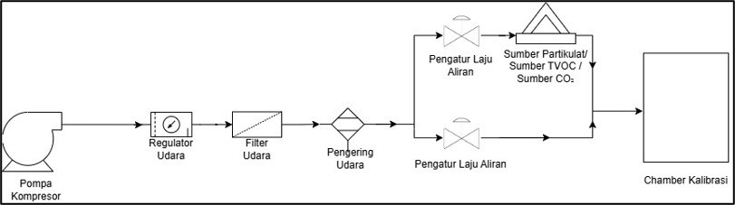
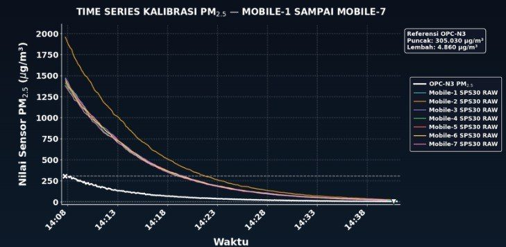
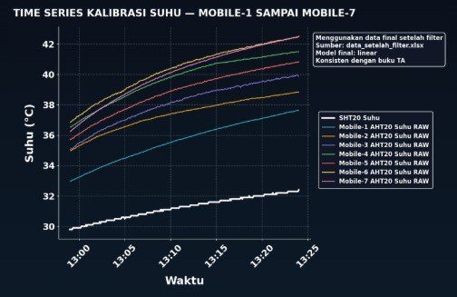
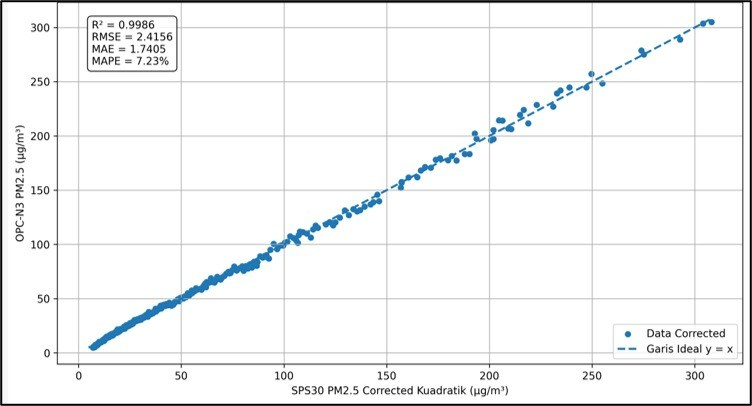
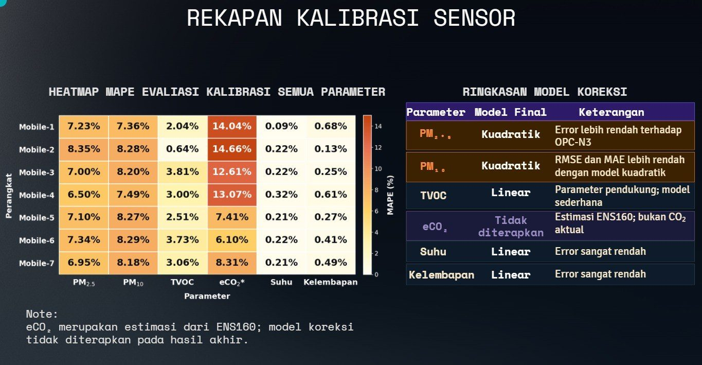
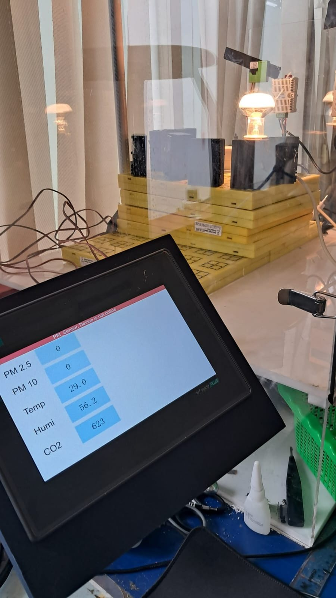
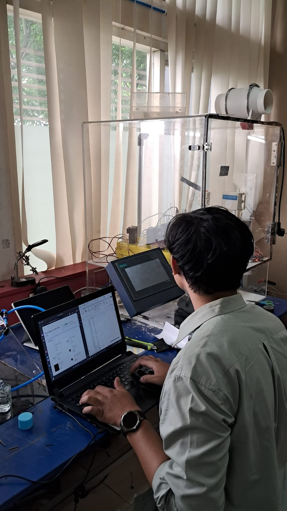
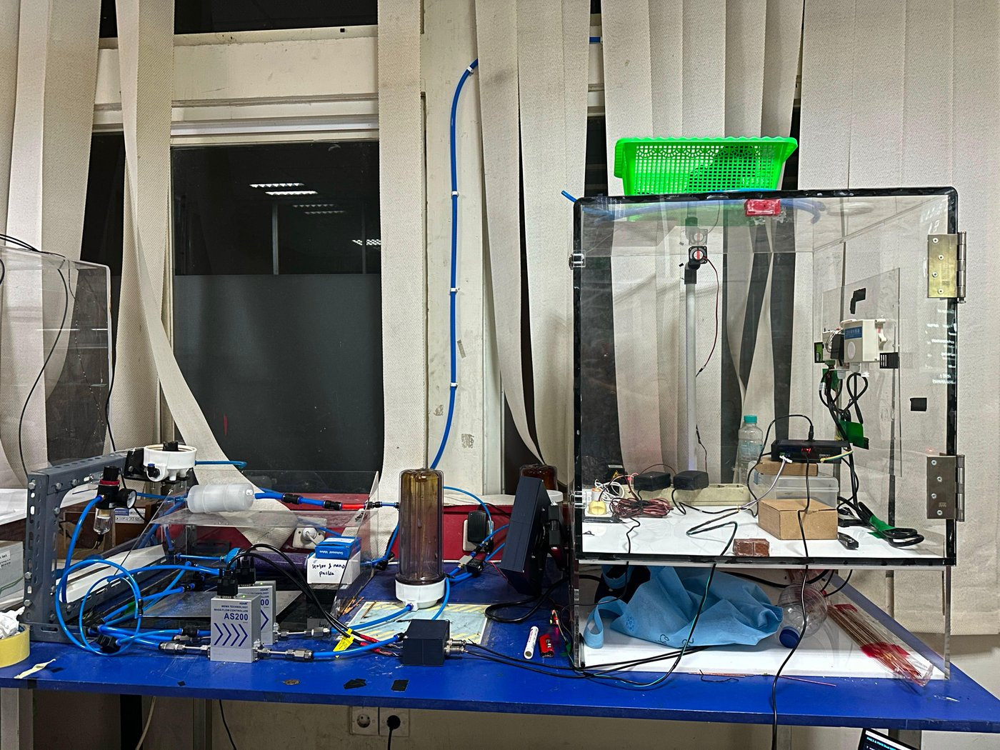

Project · Calibration
Environmental Sensor Calibration and Data Processing
Part of my undergraduate final project: "Development of a Wearable Air Quality Monitoring System with Human Activity Recognition Integration for Analyzing the Effect of Motion on Particulate Measurement". This page covers sensor calibration and data processing. Other parts:

Why the sensors needed calibration
A compact wearable needs low-cost sensors such as the SPS30 and ENS160, and this class of sensor often carries factory-inherent reading bias. Without calibration, it is hard to tell whether a change in readings comes from the environment, motion disturbance or sensor noise. Six environmental parameters across seven device units were therefore tested against reference instruments.
| Parameter | Sensor on the wearable | Reference instrument |
|---|---|---|
| PM2.5 | SPS30 | OPC-N3 |
| PM10 | SPS30 | OPC-N3 |
| TVOC | ENS160 | DT-900A |
| eCO₂ | ENS160 | RS485 CO₂ sensor |
| Temperature | AHT21 | SHT20 |
| Humidity | AHT21 | SHT20 |
What I did
- Compared readings from the seven wearable units with reference instruments in a calibration chamber.
- Processed calibration results and selected quadratic PM2.5/PM10 and linear TVOC, temperature and humidity corrections; documented interpretation limits for ENS160 eCO₂ as an estimate.
- Used Python and Microsoft Excel for timestamp alignment, outlier filtering, calibration analysis and visualisation.
Data collection method
- Particulates (PM2.5 and PM10): decay method. Pollutants were pumped in until concentrated, then allowed to decrease gradually with clean air, covering the range from high to low concentration.
- Temperature and humidity: only the heating (rising) phase was used. The cooling phase was excluded to avoid distortion from residual heat and heat generated by the microcontroller's own components.


Data cleansing and model evaluation
- Large datasets: processing, time-syncing, cropping and consolidating 22,297 rows of raw time-series data recorded simultaneously from all devices.
- Cleansing: filtering roughly 800 outliers using Interquartile Range (IQR) and Rolling MAD, producing 12,225 clean data points for model training.
- Error analysis: evaluating prediction models iteratively with RMSE, MAE and MAPE.

Results
Comparing linear and quadratic models, the quadratic model was the most effective at correcting the non-linear bias of the particulate sensors, reducing RMSE. For temperature, humidity and TVOC, the linear model was chosen because it was already accurate and lighter to run directly on the microcontroller. The eCO₂ reading of the ENS160 is documented as an estimate.
This calibrated data baseline was the foundation for the next stage of the research: analysing the effect of walking and running on particulate readings.

Documentation


